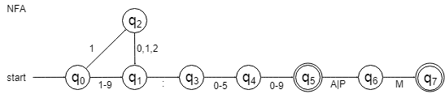
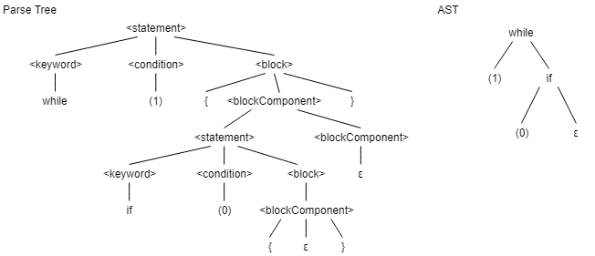
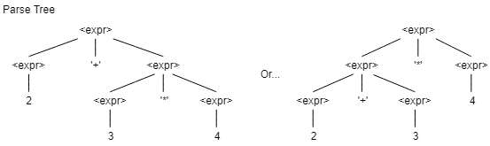
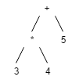
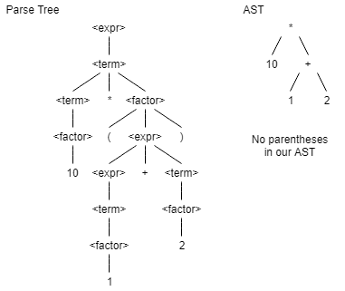

CS 230 - Introduction to Computers and Computer Systems |
|
| Instructor: | Rob Hackman |
|---|---|
| Office: | DC2551A |
| Email: | r2hackma@uwaterloo.ca |
| Website: | https://www.student.cs.uwaterloo.ca/~cs230/ |
| Note: | All program codes in this course notes are provided by Prof. Hackman during class. |
Lecture 15 - 01/03/2018
Module 4 - Build and Execute
How do we really go from a high level language to a final executable binary file of our machine code instructions?
Our classic tool chain is:
-
Compiler
- It translates from a source language to a target language (usually high level to low level); this will produce assembly (compilers usually just create the final binary file).
- Assembler
- It translates an assembly code program into a machine code object file.
-
Linker
- It combines multiple object files of machine code into a final executable file.
-
Loader
- It loads a program file into our main memory.
-
Library
- The special object files that can be added to your program either in the linking or loading phase.
Notice that compiler, assembler and linker are for building and loader is for executing.
The Compiler
- translates a program from a source language to a target language
- typically from high language to low language
- can be followed by an assembler to generate machine code
We usually breaks our compilation up into steps: these steps can be even subdivided.
-
Scanning/Lexical Analysis
- scanning through the program and breaking it up into meaningful tokens
- the tool that performs this step is called a lexer
-
Parsing/Syntax Analysis
- check that the sequences of tokens provided by our lexer is meaningful (does it follow the rules of our languages?)
- the tool that performs parsing is called a parser
-
Semantic Analysis
- gather information needed for the execution of the program from the source code
- create a symbol table and do type checking
-
Code Generation
- generate the target language copy of this code
Scanning/Lexical Analysis (Tokenizing)
- ultimately convert our program into a stream of tokens
- tokens: symbolic representations of parts of our program
- keywords:
for,if,while, etc. - operators:
+,-,==, etc. - literals (constants):
500,2.5,"hello", etc. - delimiters (separates):
{,(,;, etc. - identifiers (variable name):
minAddress,x, etc.
- keywords:
How to identify a valid identifier? Literal?
We use specific methods of pattern matching comes from the theory of formal languages.
What is a formal language? It is defined by:
- A alphabet is a set of symbols that can be used to from the "words" of our language.
- A set of rules that determines how characters from our alphabet can be combined to create "words".
- There are specific kinds of formal languages and strict mathematical notations for defining them.
- One specific type of formal language is a regular language and three different ways of representing a regular language are:
- Deterministic Finite Automate (DFA)
- Na-Deterministic Finite Automate (NFA)
- Regular Expressions (RegEx)
Deterministic Finite Automate (DFA)
A Deterministic Finite Automate (DFA) is a state machine.
It is also called a Deterministic Finite State Machine (DFSM).
- has a finite set of states
- a initial state
- a non-empty set of accepting (terminal states)
- finite set of input symbols (alphabet)
- A transition function (function from state-symbol pairs to state)
- Example:
(S1, a ,S2)if in stateS1and receive input'a', go to stateS2.
- Example:
A DFA determines whether a given input string is part of your regular language (accepted) if you end in an accepting state after reading the input.
Example: A DFA that accepts beq.
q0is our initial stateq3is an accepting state- transition labels show the input that causes that transition to be taken
- CANNOT have 2 transitions FROM the same state that accept the same input
Na-Deterministic Finite Automate (NFA)
- CAN have many transition from the same state with the same input
- CAN have transitions that require no input (called ε-transitions)
- may be easier to create (but can be easier to make mistakes) and also harder to check if a string is part of your language
- can always create an equivalent DFA to any NFA
A Bit harder to evaluate if any given string is in your regular language.
Example: "00" could end in q0, q1 or q2 depending on the transitions you take.
So long a string can end on an accepting state then it is accepted.
It accepts any binary numbers that end in two 0's, or equivalently any binary number that is divisible by 4.
Regular Expressions (RegEx)
A sequence of regular symbols and meta symbols that describes a regular language. The empty string is denoted ε.
Our Meta Characters
-
|means "or", separates alternatives- Example:
hello|hiaccepts the stringhelloor the stringhi
- Example:
-
()means "grouping", used to define scope/precedence of our operators- Example:
honor|honouris equivalent tohon(o|ou)r
- Example:
[]matches any one symbol included in the brackets[^]matches any one symbol NOT in the brackets- Example:
[aeiou]matches one real vowel - Example:
[a-z]specifies the range of lowercase alphabet chars, basically is[abcd...z] - Example:
[^0-9]any non-digit characters - Example:
[a-zA-Z]any alphabetical characters[abc...zABC...Z]
.(period) represents ANY one characters*matches 0 or more of the previous character or pattern- Example:
Hell*omatches {Helo, Hello, Helllo, Hellllo, etc.} - Example:
[0-9]*matches {ε, any natural number} - Example:
.*matches ANY string including the empty string
- Example:
+matches 1 or more of the previous character or pattern- Example:
[0-9]+any natural number - Example:
.+any non-empty string
- Example:
?matches 0 or 1 of the previous character or pattern- Example:
Honou?ris same asHon(o|ou)r
- Example:
\is escape character, use this before a meta character to literally match that meta character, not have special behaviours.
Examples:
a* = {ε, a, aa, aaa, aaaa, ...}
.+ = set of all non empty strings
Notice that Σ represents our alphabet, so here it means any charcter from our alphabet.
colou?r = {colour, color}
Example:
How to write a regular expression that matches ANY string that contains exactly one a character, regardless of case (one A or a, that's is)?
Let's think about it. What defines a string with exactly a, can we break it up into components?
- a string of non-A characters (may be empty)
- an
Aor ana - a string of non-A characters (may be empty)
Answer: [^aA]*[aA][^aA]*
Lecture 16 - 06/03/2018
Recall:
We were talking about regular language to solve our problem of tokenization (lexing/scanning).
We discussed 3 constructs for defining a regular language - DFA, NFA and RegEx.
Example: All strings that contain exactly one 'A' character (regardless of case).
Solution: [^aA]*[aA][^aA]*
What does the regular expression ([1-9]|1[0-2]):[0-5][0-9](AM|PM)? accept?
12 hour clock time, you may or may not be told if it is AM or PM.

Let's write a regEx that accepts real numbers. Our real number can be just a decimal number or can be a decimal number following by 'E' then an integer.
What are our cases? Let x, y, z ∈ sequence of digit.
- x.y
- x.yEz
- x.y-z
- -x.y
- -x.yEz
- -x.yE-z
Answer: -?[0-9]+\.[0-9]+(E-?[0-9]+)?
Splitting our input stream: How to tokenize if17?
- one token, identifier (variable name)
if17 - variable name
if1followed by literal 7 - keyword
iffollowed by literal 17 - keyword
iffollowed by literal 1, followed by literal 7 - variable name
ifollowed by variable name "f17" - e.t.c.
To solve conflicting rules (is if the keyword or variable name), the rule that is written first takes priority.
To solve cases where an input could be broken up multiple times by some of rules, the longest match is taken (17 is 17, not 1 then 7).
If the input doesn't match any of our rules, then it is not part of our language.
In the context of compiling:
- the code will not compile
- you will receive an error message
- stop executing, skip characters until valid input is reached again, and keep going - so that all the syntax errors can be printed our when found
After the scanner's execution, there is a sequence of valid tokens (e.g. a series of correctly spelled words in English).
Parsing
- analyse the sequence of tokens and verify that it follows the rules of our language
- e.g. Does that sequence of correctly spelled rules follow the rules of grammar?
- report errors if not
- create an Abstract Syntax Tree (AST)
So, we need some way to state the rules of our language, regular languages are not sufficient.
We want a way to specify our language that is:
- simple for humans
- unlike human languages, must be unambiguous
- a sentence can have only one meaning
Example:
1. "It's unpleasantly like being drunk."
2. "What;s so unpleasant about being drunk?"
1. You ask a glass of water.
It must be easy to build parsing tools for that language.
We want a formal language that is defined by what is called a "Context-Free Grammar" (CFG).
Context-Free Grammar (CFG)
The components of CFG are:
- terminal symbols: actual symbols that appear in our language
- the set of our terminal symbols can be thought of as our alphabet
- nonterminals: abstract component of our language, we can think of them as variable names
- nonterminals themselves don't literally appear in our input
- one nonterminal is chosen as our "start symbol" where all valid "sentences" of our language begin
- denoted
<NTName>
- production rules
- rules of expansion of our nonterminals into one or more terminals and/or nonterminals
- more than one rule per nonterminal is allowed, alternatives are separated with
|(the pipe character) - notation is
<NTName> -> Expansion1|Expansion2
Deriving Input Strings
- application of production rules to generate valid input string
- starting with our start symbol, repeatedly replace one nonterminal with one of its expansions
- continue until all nonterminals are gone
- resulting sequence of terminals is a valid or syntactically correct input string
- formal definition of our language is all valid sequences that can be derived from our start symbol following our rules of production
- systematic approach is to always expand the left-most nonterminal
Example:
Simple language that accepts if and while constructs and only values 0 or 1 as our conditions. An if or while can be defined as:
- either the keyword
iforwhile - after the keyword, we see an opening parenthesis
(then a 0 or a 1, and then) - after the conditional, we see
{then any number ofiforwhilestatement then a} - Terminals: while if 0 1 ( ) { }
- Starting nonterminal: <statement>
<statement> → <keyword><condition><block>
<condition> → (0)|(1)
<keyword> → while|if
<block> → {<blockComponent>}
<blockComponent> → ε|<statement> <blockComponent>
// Example derivation of
01 while (1) {
02 if (0) {}
03 }
Stat at our start NT:
01 <statement>
02 <keyword> <condition> <block>
03 while <condition> <block>
04 while (1) <block>
05 while (1) {<blockComponent>}
06 while (1) {<statement> <blockComponent>}
07 while (1) {<keyword> <condition> <block> <blockComponent>}
08 while (1) {if <condition> <block> <blockComponent>}
09 while (1) {if (0) <block> <blockComponent>}
10 while (1) {if (0) {<blockComponent>} <blockComponent>}
11 while (1) {if (0) {} <blockComponent>}
12 while (1) {if (0) {}}
Lecture 17 - 08/03/2018
Recall from last lecture...
<statement> → <keyword> <condition> <block>
<keyword> → while|if
<condition> → (1)|(0)
<block> → {<blockComponent>}
<blockComponent> → ε|<statement> <blockComponent>
// example: Statement (1)
01 while (1) {
02 if (0) {}
03 }
So we want our parser to produce an AST. It can be hard for a human to go straight from a grammar to an AST. Thus, we will also discuss a parse tree and how it differs from an AST.
A parse tree:
- explicitly encodes the entirety of your derivation
- has your non-terminals as the internal nodes
- root of your tree is the start non-terminal
- children of nodes are given by the production rules
- has your terminals as leaf nodes
While an AST:
- implicitly encodes as much information as possible in the structure of the idea
- doesn't explicitly include non-terminals
- simple to interpret/work with
For our statement (1), the parse tree and AST are...

If we did have multiple statements in our block, in an AST, we would essentially have an empty node as the right child of the if or while.
Example: while (1) {if (0) {} while (0) {}}
Let's consider another example.
A CFG for the input to a basic integers calculator. We want to support subtraction, addition, multiplication, division and parentheses.
Grammar (E1):
- Tokens:
*,+,-,/,(,), and integer constants - Start with non-terminal
<expr>(expression)
<expr> → <term> <more terms>
<term> → <factor> <more factors>
<factor> → <expr>|int
<more Terms> → + <term> <more terms>
| - <term> <more terms>
| ε
<more factors> → * <factor> <more factors>
| / <factor> <more factors>
| ε
Example: Leftmost derivation of 7 + 34.
01 <expr>
02 <term> <more terms>
03 <factor> <more factors> <more terms>
04 7 <more factors> <more terms>
05 7 <more terms>
06 7 + <term> <more terms>
07 7 + <factor> <more factors> <more terms>
08 7 + 34 <more factors> <more terms>
09 7 + 34 <more terms>
10 7 + 34
We must consider a couple other factors other than just having our CFG be unambiguous.
Two things of concern are associativity and precedence of our operators.
-
Associativity: grouping of our equivalent operators
- 6 - 3 + 4 could be read left or right associative, respectively (6 - 3) + 4 or 6 - (3 + 4)
-
For integer division, associativity is very important. So by definition, division is left-associative.
- 6 / 3 / 2 if interpreted right-associative: 6 / (3 / 2) → 6 / 1 → 6
- 6 / 3 / 2 if interpreted left-associative (6 / 3) / 2 → 2 / 2 → 1
- Precedence: which operators "bind together", who should get executed first
Example: Our parse tree for 6 / 3 / 2 following with E1 is...
This is right associative! This is NOT good!
So we rewrite our grammar to be left associative. We do this by having our expressions ALWAYS recurse on the left hand side of the operator and the right hand side being a terminal, atomic expression in parentheses.
New Grammar (E2), start non-terminal <expr>.
<expr> → <expr> + <term>
| <expr> - <term>
| <expr> * <term>
| <expr> / <term>
<term> → int
| (<expr>)
So deriving 6 / 3 / 2 with E2 we get:
Precedence is obviously also important.
Example: 2 + 3 * 4 is 2 + (3 * 4) not (2 + 3) * 4.
This derives to (2 + 3) * 4!!! This is NOT good!!!
New, Grammar E3.
To enforce precedence, we order our rules from least to most precedence.
<expr> → <term> + <term>
| <term> - <term>
| <term>
<term> → <term> * <factor>
| <term> / <factor>
| <factor>
<factor> → (<expr>)
| int
Let's derive 2 + 3 * 4.
Ambiguity
If a sentence can be interpreted more than one way, there exists two derivations for the same sentence.
Grammar E4:
<expr> → <term> + <term>
| <term> - <term>
| <factor>
<factor> → <factor> * <factor>
| <factor> / <factor>
| <expr>
| int
Example: derive 2 * 3 * 4 using E4.
Associativity of this language is ambiguous!
Lastly, grammar E5:
<expr> → <expr> + <expr>
| <expr> - <expr>
| <expr> * <expr>
| <expr> / <expr>
| (<expr>)
| int
Example: derive 2 + 3 * 4.

Ambiguous Precedence!!!
Associativity, precedence, ambiguity → why do we care?
- good specification of our language means a good free structure
- good tree structure → correct evaluation for code generation
- if ambiguous - which tree do we generate?
Encode precedence and associativity in your grammar.
If we have an ambiguous grammar, we have no definitive output.
- certain ambiguities can be spotted easily
- example: two same non-terminals in a rule
-
ultimately, undecidable problem
- no method can exist that an answer "is this grammar ambiguous" for all grammars
Parse Tree Evaluation
- recursive tree traversal
- evaluate current node after evaluating children (post-order traversal)
In order to ensure proper evaluation order...
- arrange your non-terminal rules (have we fixed precedence?)
- potentially introduce new non-terminals
That's parsing; the parser uses a CFG to check the validity of the input stream of tokens and produce an AST for the next steps.
Last stages of Compiler - Semantic Analyzer
- create a symbol table
- maps variable names/function/class names to relevant information
- type checking
-
make sure operations are valid on the types passed in
- example: can't add an integer and a string
5 + "hello"
- example: can't add an integer and a string
- annotate the parse tree or AST with type information
-
make sure operations are valid on the types passed in
Lecture 18 - 13/03/2018

Evaluate a parse tree or AST, we do so with recursive tree traversal.
Typically, post-order traversal.
If you're looking at Node N, first evaluate its left child, then its right child, then node N itself. (post-order traversal)
In order to ensure proper evaluation order, our tree must have a good structure (proper associatively and precedence) to enforce a good structure:
- carefully arrange your non-terminals in your rules
- potentially introduce new non-terminals
Last Stage of Compilation
- Semantic Analysis
- Check extra semantic information not included in our token sequence or tree
-
Type Checking
- Example: It is valid to say (as per the rules of our grammar)
var1 = var2, but ifvar1is an integer andvar2is a string, this is invalid.
- Example: It is valid to say (as per the rules of our grammar)
- Does the identifier being referenced actually exist at this point?
- Example:
len(myVar)→ IfmyVardoes not exist then this is nonsensical
- Example:
- Builds the symbol table which keeps track of what identifiers exist in the current given scope and their type signatures.
-
Code Generation
- Generate the actual target language version of our source code.
Last class we looked at 5 grammars, which E4 and E5 were purpose fully bad to show ambiguity.
E3 was our best grammar.
<expr> → <term> + <term>
| <term> - <term>
| <term>
<term> → <term> * <factor>
| <term> / <factor>
| <factor>
<factor> → (<expr>)
| int
Let's look at the derivation of 10 * (1 + 2)

The code generation is quite straightforward.
01 addi $9, $0, 10 ; eval left child of *
02 addi $10, $0, 1 ; eval left child of +
03 addi $11, $0, 2 ; eval right child of +
04 add $10, $10, $11 ; eval +
05 mult $9, $10 ; eval *
If instead of literals, we did have some sort of variables, we will have to keep track of where the variables are stored and use the equivalent operations with loads and stores.
01 var1: .word 0
02 var2: .word 0
Code generation becomes slightly trickier when generating assembly for high level programming concepts; for example, loops, functions, classes, etc.
In the end you just have to find a general form for the concept and generate with the given concepts.
After code generation is done, we must now assemble.
Assembler will:
- do line by line translation of one assembly instruction to one (or more) machine code instructions
- insert data for our
.worddirectives - ignore any comments or blank lines
- compute the addresses of each label and replace references to that label with that address
Example:
01 list $9 ----→ <binary represent of list $9>
02 .word string → 000……10100100
⁝
41 jr $31 → 0000 0011 1110 0000
42 string: .word 0x41; ASCII for 'A' → 0001……101001
43 .word 0x00 --------------→ 0000……0000
Linker
Goal: combine multiple object files.
Why break up our program into multiple files?
It can avoid compiling our whole program every time we make a change, only compile the files that changed and re-link.
Linker resolves external symbols: label that refers to other object file.
For example, we could want to jump to a subroutine in another object file.
Also, linker produces the final executable.
Basics of Object File Format
- file header (meta data)
- text segment (actual code)
- data segment (static data)
- defined external symbols
- our symbols that other object files can refer to
- undefined external symbols
- symbols not defined here, we must find them in another object files' defined external symbols
- local symbols (debugging relocation)
Relocation
When assembler produces our object files, the code for each starts at address 0.
How do we combine multiple files like this?
- Relative addresses (e.g. branch) is not a problem.
- Absolute addresses and static data must be fixed.
- We have object file contain a list of such code locations.
- Adjust Actual addresses in object code.
Example:
| File A | File B | ||||
|---|---|---|---|---|---|
| 0 | …… |
0 | …… |
||
…… |
…… |
||||
| 64 | jar mySubroutine |
42 | mySubroutine: addi …… |
||
…… |
…… |
||||
| 99 | jr $31 |
…… |
|||
Imagine we just stack there files on top of each other.
Then, the first instruction of file B actually becomes instruction 100.
So, the first instruction of mySubroutine becomes instruction 142.
Now, when we jump to mySubroutine, we can resolve the address to be 142 * 4.
Libraries
- just a collection of object files
- contain functionality used by many programs, like square root
- ready for linking with other files
Loading
- loading executable from disk into memory
- if command line arguments are used, place them in the correct (expectable) place
- initialise register (e.g. stack pointer)
- create a new process in the operating system and initialise by jumping to the start label
Dynamic Linking
- relocate and resolve symbols at load time instead of linking
Dynamic Library
- do not add the library to the final compiled executable, combine with it at the loading step (smaller executable)
Dynamic Shared Libraries
- keep only one object code in memory, store in special memory area, or special relocatable object code
- Dynamic Link Libraries (DLL) on Windows
- modifications to a DLL apply all programs that use it
- no rebuilding necessary
- requires that the computer running your program has the DLL you rely on and it has to be a compatible version
Alternative Execution Approaches
-
Interpretation
- alternative to compiling
- scanning, parsing and type checking are done in the same way
- where a compiler would traverse the AST and generate the code and a interpreter traverses the tree and executes the code
- usually slower than executing a compiled program
- may have to traverse some part of the tree multiple time (e.g. loop)
- it is a program executing your program
- writing an interpreter is usually easier than writing a compiler and if you write an interpreter with a language that can be compiled on may different machines, now you language works on all those machines
-
Compilation and Interpretation can be combined:
- have a compiler that generates an intermediate representation of your code, and an interpreter that interprets that intermediate representation
-
Java is an example of this
- Java is compiled to Java byte code
- the interpreter that interprets the Java byte code is the Java Virtual Machine (JVM)
- if we can write a JVM for a system, we can run Java on that system
- trade-off is between portability and speed
| ← Go to Module 3 - Machine Internals | ↑ Go to Index | → Go to Module 5 - Multiprocessing |
Find a typo or mistake? Feel free to contact me and I will correct it as soon as possible.
Thanks For Coming Here. - Calvin Li
 This work by Chun Kit (Calvin) Li is licensed under a Creative Commons Attribution-NonCommercial 4.0 International License. Chun Kit (Calvin) Li © 2017 - 2018
This work by Chun Kit (Calvin) Li is licensed under a Creative Commons Attribution-NonCommercial 4.0 International License. Chun Kit (Calvin) Li © 2017 - 2018